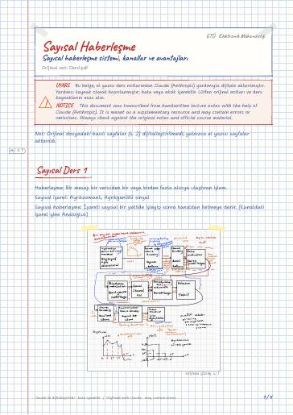
Sayısal haberleşme sistemi, kanallar ve avantajları
Sayısal Ders 1 · Kanallar · Wireline (kablolu) · Wireless (Telsiz) · Sayısal haberleşmenin avantajları · Sayısal haberleşmenin dezavantajları
Digital Communications — lecture notes, homework, and projects at Gebze Technical University (GTU) Electronics Engineering
Örnekleme ve darbe kod modülasyonu, temel bant iletim, optimum alıcılar, sayısal modülasyon (ASK, PSK, FSK) ve bit hata olasılığı.
Sampling and pulse-code modulation, baseband transmission, optimum receivers, digital modulation (ASK, PSK, FSK) and bit-error probability.
Bu sayfada: Ders Notları Dijital Notlar (LaTeX) Ödevler Projeler GitHub Depoları
El yazısı notların LaTeX ile yazılmış, aranabilir dijital versiyonları. Şablon ve derleme: latex-sablon.

Sayısal Ders 1 · Kanallar · Wireline (kablolu) · Wireless (Telsiz) · Sayısal haberleşmenin avantajları · Sayısal haberleşmenin dezavantajları

Olasılık teorisi, Rastgele Değişkenler ve Rastgele Prosesler · Rastgele Değişken (RD) · Olasılık Dağılım Fonksiyonu (ODF) · Olasılık Yoğunluk Fonk. (OYF) · Düzgün Dağılım (Uniform distribution) · Normal Dağılım (Gauss)
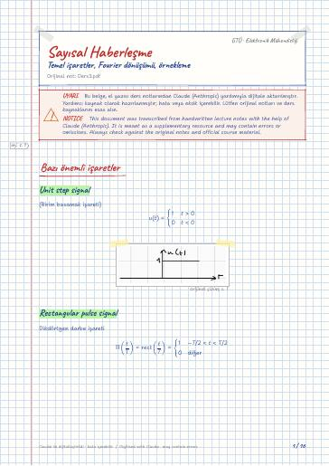
Bazı önemli işaretler · Unit step signal · Rectangular pulse signal · Triangular pulse signal · Sinc pulse signal · Sgn signal
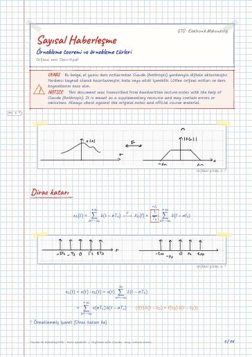
Dirac katarı · İşareti yeniden oluşturma · Örnek: Lathi; Prob. 6.1-4 · Pratik örnekleme · Örnek: Lathi, Pr. 6.1-3 · Düz Tepeli örnekleme
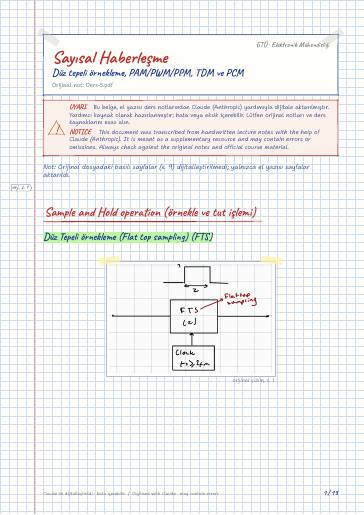
Sample and Hold operation (örnekle ve tut işlemi) · Düz Tepeli örnekleme (Flat top sampling) (FTS) · Sample/ Hold (Dump) circuit · Reminder · Time division multiplexing (TDM) Zaman bölmeli çoklama (ZBÇ) · Pulse code Modulation (Darbe kod modülasyonu - DKM)
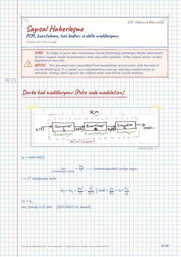
Darbe kod modülasyonu (Pulse code modulation) · Düzgün olmayan kuantalama (Non uniform quantization) · μ tipi sıkıştırıcı (low) · A tipi sıkıştırıcı · Kodlayıcı (Encoder) · İletim hızı ve BG
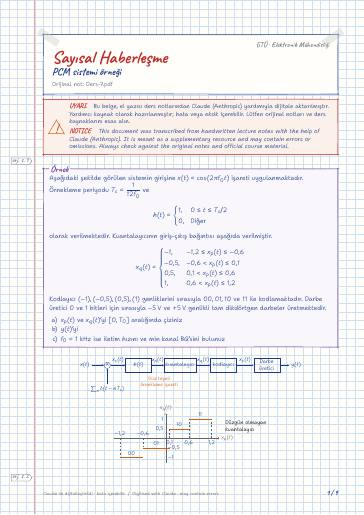
Delta Modülasyon (DM) · Delta modülatör · Delta demodülatör · Encoding techniques applied to speech signals
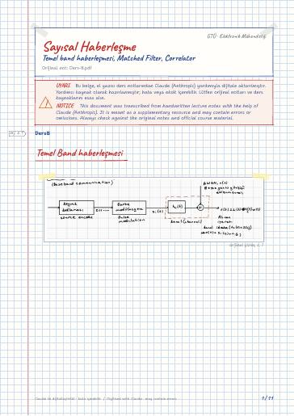
Temel Band haberleşmesi · Karşılayıcı Filtre (Matched Filter - MF) · İlişkilendirici (Correlator) · İlişkilendirici
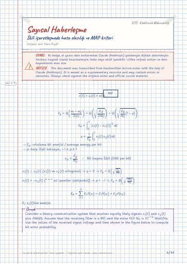
İkili işaretleşmenin Hata olasılığı Performansı · Tek kutuplu işaretleşme (Unipolar signaling) · Çift kutuplu işaretleşme (Bipolar signaling) · Likelihood Ratio Test and Maximum a Posteriorikirmizikalem probability (MAP) Criterion
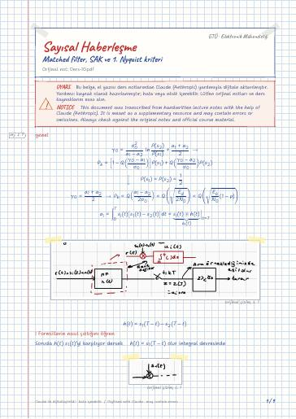
Semboller arası karışım (SAK) · Sıfır SAK için 1. Nyquist kriteri · Raised cosine (RC) darbesi · 1. Nyquist kriterinin diğer ifadesi
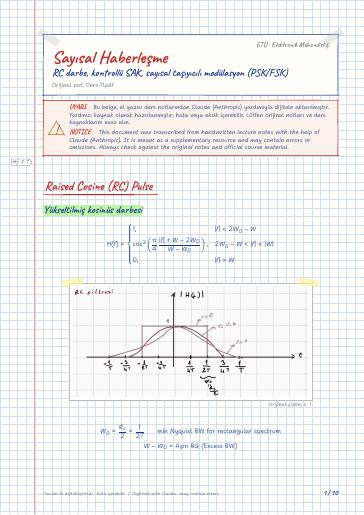
Raised Cosine (RC) Pulse · Yükseltilmiş kosinüs darbesi · Kontrollü SAK ile işaretleşme · (Signaling with controlled ISI) · (Kısmi cevaplı işaretleşme – Partial response signaling) · Duo binary darbe
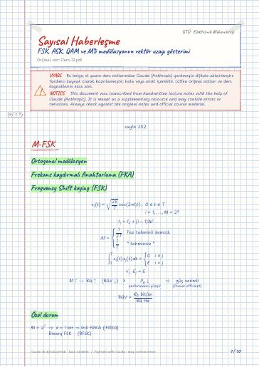
M-FSK · Ortogonal modülasyon · Frekans kaydırmalı Anahtarlama (FKA) · Frequency Shift keying (FSK) · Özel durum · Genlik Kaydırmalı Anahtarlama
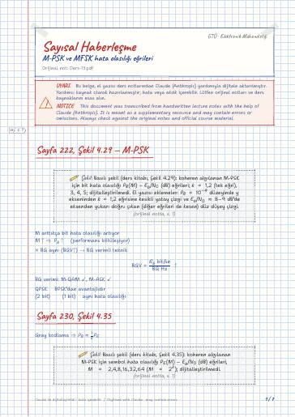
Sayfa 222, Şekil 4.29 — M-PSK · Sayfa 230, Şekil 4.35 · Sayfa 221, Şekil 4.28 (MFSK) — MFSK · Performans ifadeleri · MPSK · MFSK
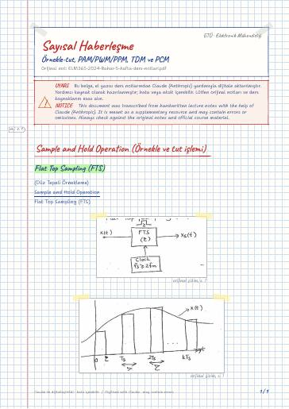
Sample and Hold Operation (Örnekle ve tut işlemi) · Flat Top Sampling (FTS) · Time Division Multiplexing (TDM) · Pulse Code Modulation (PCM) · Reminder
Elektromanyetik Dalga Teorisi · Haberleşme Laboratuvarı · Kontrol Sistemleri · Sayısal İşaret İşlemenin Temelleri · Sayısal İşaret İşleme Laboratuvarı
GitHub'da klasörü aç← 6. Dönem
Ders materyallerinin hakları ilgili öğretim üyelerine ve GTÜ'ye aittir; eğitim amacıyla paylaşılmıştır.